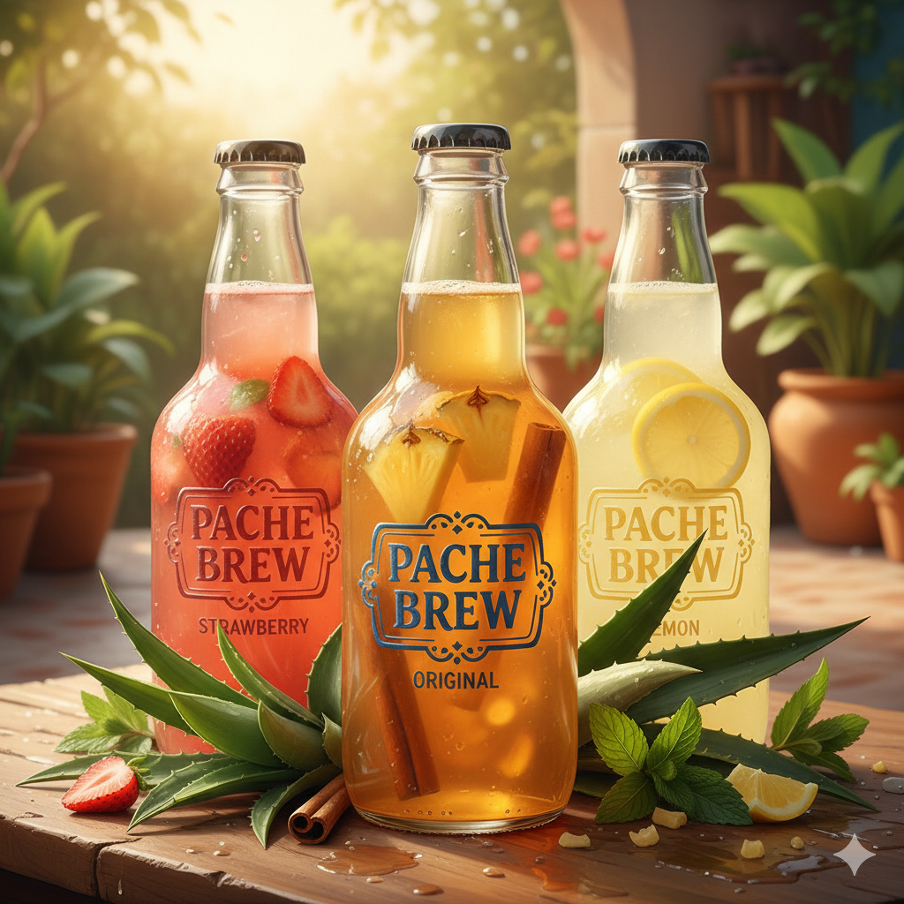

Website ini dibuat sebagai bagian dari proyek pembelajaran bioteknologi untuk memperkenalkan proses fermentasi pada pembuatan tepache. Melalui proyek ini, dilakukan pengamatan terhadap perubahan yang terjadi selama proses fermentasi, termasuk perubahan rasa, aroma, serta tingkat keasaman (pH) dari minuman yang dihasilkan.
Selain itu, proyek ini juga bertujuan untuk menunjukkan bahwa bahan sederhana seperti kulit nanas dapat dimanfaatkan menjadi produk yang bernilai dan bermanfaat. Dengan memanfaatkan proses fermentasi alami, tepache tidak hanya menjadi minuman yang menyegarkan tetapi juga berpotensi mengandung probiotik yang baik bagi kesehatan pencernaan.

Tepache adalah minuman probiotik tradisional Meksiko hasil fermentasi kulit nanas, gula (seringnya piloncillo/gula aren), dan rempah-rempah (kayu manis/cengkeh) selama 2-3 hari. Rasanya manis, asam, sedikit bersoda, dan menyegarkan, serta kaya manfaat untuk kesehatan pencernaan, meningkatkan imun, dan menurunkan kolesterol.
Tepache kaya akan probiotik (bakteri baik) yang bermanfaat bagi kesehatan pencernaan, meningkatkan sistem imun, dan mengandung enzim bromelain yang membantu mengurangi peradangan.
Minuman ini memiliki kadar alkohol yang sangat rendah (biasanya di bawah 1%) karena waktu fermentasi yang singkat, sehingga sering dianggap sebagai minuman ringan di negara asalnya.